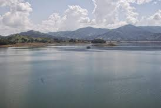
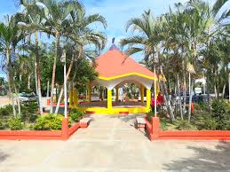
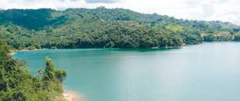
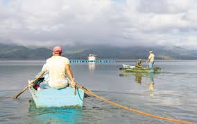

It's wonderful the structure of this mountains in Hatillo to get a great view.

It's amazing to know that Hatillo has their own district for the benefits of anyone can enjoy around and looking for more activities.

We love the amazing lake from this part to have a good time with friends or anyone of this wonderful place.

The opportunity for those who are looking for fishes they would find it near to the lake.
Hatillo is good to retain the water for the comunity and share with those that doesn't have it.